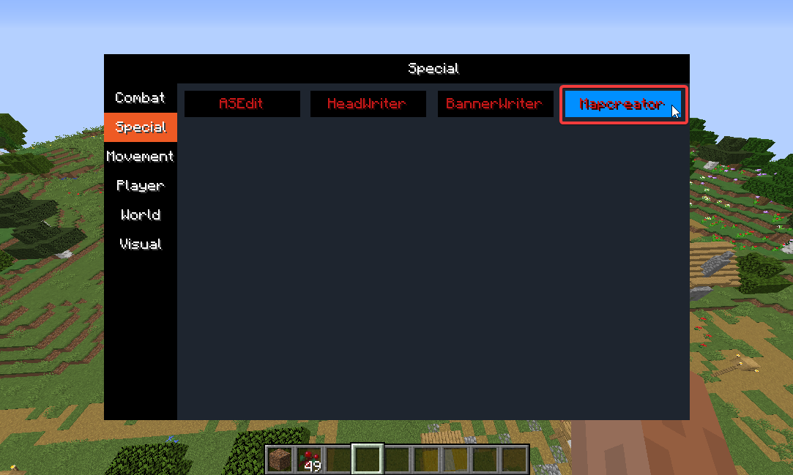
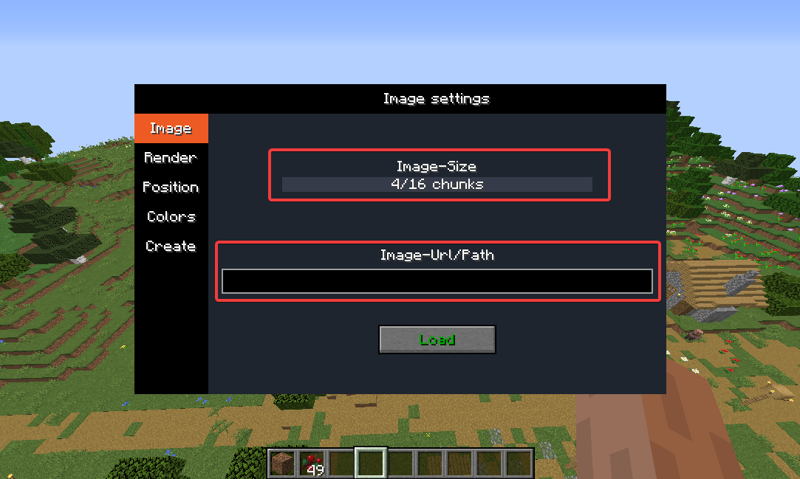
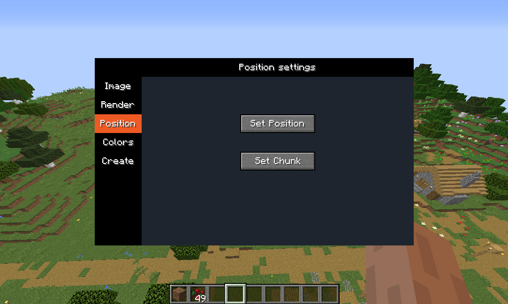
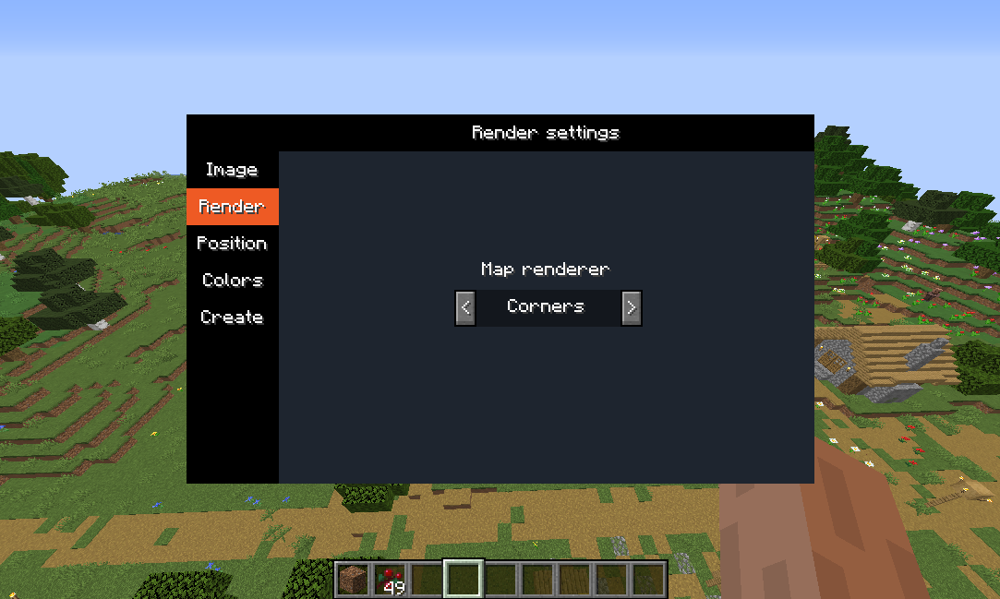
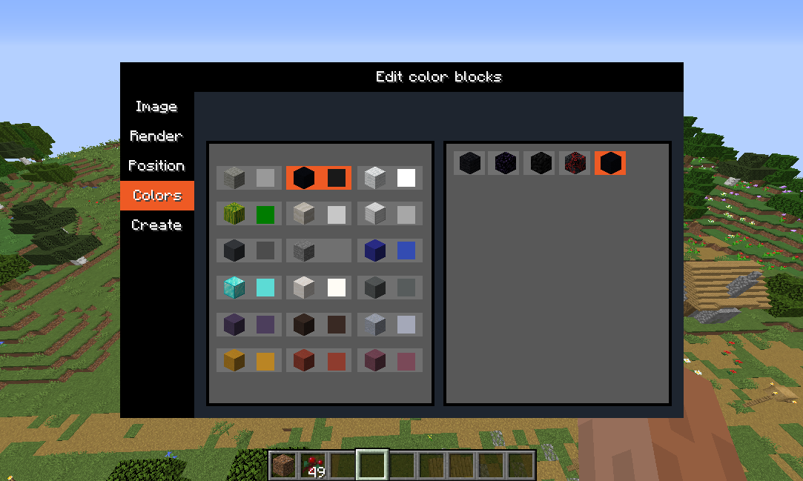
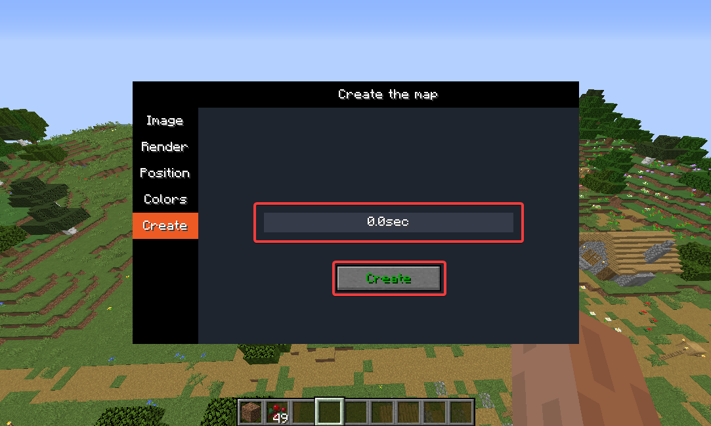
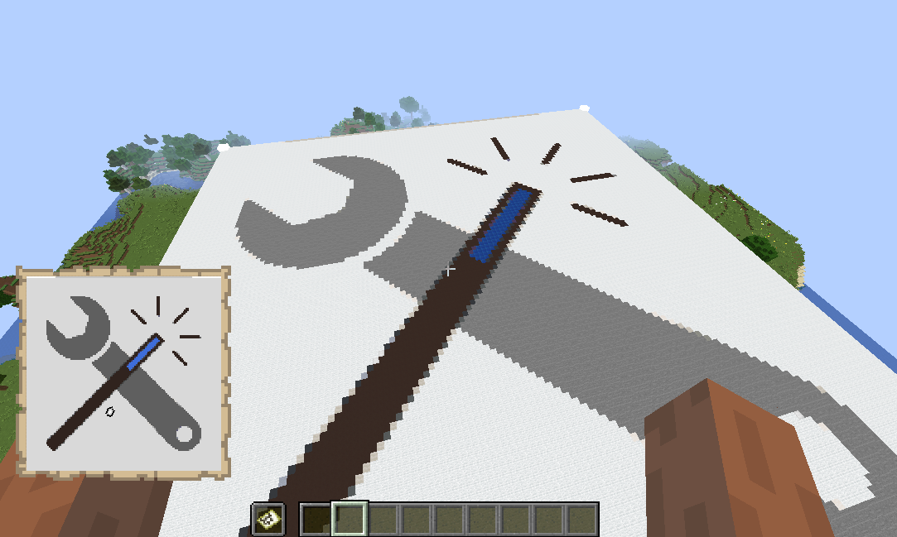

Mapcreator
| Requirements | Description |
|---|---|
| Command rights | The actually set the map the module uses setblock. |
How to use
Activate the Module Mapcreator in the section Special.
When you press the F key, you can see that a gui opens.
At the image tab you can change the images's size and load any image URL or Path from your computer.
Next you can select the position where the image should be rendered in the Position tab.
On the Render tab you can define how the image will be rendered.
The Color tab is ment to edit the block that will be used for the different colors.
Finally with the create tab you can use setblock to place the image. It even has a delay switch if you want to use it on servers and wont want to be kicked for spam
Now you have your selected image
